전기기사 (2015-05-31 기출문제)
1과목: 전기자기학
1. 유전율 ε, 전계의 세기 E인 유전체의 단위 체적에 축적되는 에너지는?
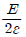
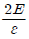
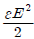
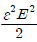
(정답률: 84%)

2. 반경 a인 구도체에 -Q 의 전하를 주고 구도체의 중심 O에서 10a 되는 점 P에 10Q의 점전하를 놓았을 때, 직선 OP 위의 점 중에서 전위가 0이 되는 지점과 구도체의 중심 O와의 거리는?
- a/5
- a/2
- a
- 2a
(정답률: 63%)
3. 그림과 같은 동축 원통의 왕복 전류회로가 있다. 도체 단면에 고르게 퍼진 일정 크기의 전류가 내부 도체로 흘러 들어가고 외부 도체로 흘러나올 때, 전류에 의해 생기는 자계에 대하여 틀린 것은?
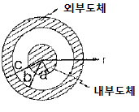
- 외부공간(r > c)의 자계는 영(0)이다.
- 내부 도체 내(r < a)에 생기는 자계의 크기는 중심으로부터 거리에 비례한다.
- 외부 도체 내(b < r < c)에 생기는 자계의 크기는 중심으로부터 거리에 관계없이 일정하다.
- 두 도체사이(내부공간)(a < r <b)에 생기는 자계의 크기는 중심으로부터 거리에 반비례한다.
(정답률: 61%)
4. 내구의 반지름이 a[m], 외구의 내 반지름이 b[m]인 동심 구형 콘덴서의 내구의 반지름과 외구의 내 반지름을 각각 2a, 2b로 증가시키면 이 동심구형 콘덴서의 정전용량은 몇 배로 되는가?
- 1
- 2
- 3
- 4
(정답률: 72%)
5. 다음 중 틀린 것은?
- 도체의 전류밀도 J는 가해진 전기장 E에 비례하여 온도변화와 무관하게 항상 일정하다.
- 도전율의 변화는 원자구조, 불순도 및 온도에 의하여 설명이 가능하다.
- 전기저항은 도체의 재질, 형상, 온도에 따라 결정되는 상수이다.
- 고유저항의 단위는 Ωㆍm이다.
(정답률: 67%)
6. 그림과 같은 단극 유도장치에서 자속밀도 B[T]로 균일하게 반지름 a[m]인 원통형 영구자석 중심축 주위를 각속도 ω[rad/s]로 회전하고 있다. 이 때 브러시(접촉자)에서 인출되어 저항 R[Ω]에 흐르는 전류는 몇 [A]인가?
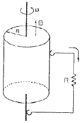
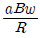
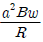
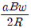
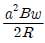
(정답률: 47%)
7. 다음 중 식이 틀린 것은?
- 발산의 정리 :
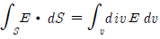
- Poisson의 방정식 :
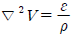
- Gauss의 정리 :
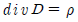
- Laplace의 방정식 :
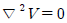
(정답률: 82%)
8. 영구자석에 관한 설명으로 틀린 것은?
- 한번 자화된 다음에는 자기를 영구적으로 보존하는 자석이다.
- 보자력이 클수록 자계가 강한 영구자석이 된다.
- 잔류 자속밀도가 클수록 자계가 강한 영구 자석이 된다.
- 자석 재료로 폐회로를 만들면 강한 영구자석이 된다.
(정답률: 76%)
9. 원점에서 점 (-2,1,2)로 향하는 단위 벡터를 a1이라 할 때 y=0 인 평면에 평행이고, a1에 수직인 단위벡터 a2는?
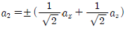
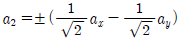
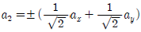
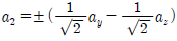
(정답률: 58%)
10. 자극의 세기가 8×10-6[wb], 길이가 3[cm]인 막대자석을 120[AT/m]의 평등 자계 내에 자력선과 30°의 각도로 놓으면 이 막대자석이 받는 회전력은 몇 [Nㆍm]인가?
- 3.02×10-5
- 3.02×10-4
- 1.44×10-5
- 1.44×10-4
(정답률: 76%)
11. 수직 편파는?
- 전계가 대지에 대해서 수직면에 있는 전자파
- 전계가 대지에 대해서 수평면에 있는 전자파
- 자계가 대지에 대해서 수직면에 있는 전자파
- 자계가 대지에 대해서 수평면에 있는 전자파
(정답률: 72%)
12. 자기 쌍극자에 의한 자위 U[A]에 해당되는 것은? (단, 자기 쌍극자의 자기 모멘트 M[Wbㆍm], 쌍극자의 중심으로부터의 거리는 r[m], 쌍극자의 정방향과의 각도는 θ 라 한다.)
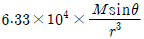
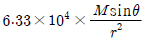
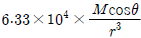
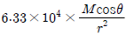
(정답률: 62%)
13. 두 개의 자극판이 놓여 있을 때, 자계의 세기 H[AT/m],, 자속밀도B[Wb/m2] , 투자율 μ[H/m]인곳의 자계의 에너지 밀도[J/m3]는?
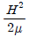
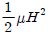
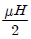
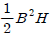
(정답률: 81%)
14. 길이 l[m], 단면적의 반지름 a[m]인 원통이 길이 방향으로 균일하게 자화되어 자화의 세기가 J[Wb/m2]인 경우, 원통 양단에서의 전자극의 세기 m[Wb]은?
- J
- 2πJ
- πa2J
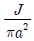
(정답률: 76%)
15. 평면 전자파에서 전계의 세기가
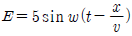
[μV/m]인 공기 중에서의 자계의 세기는 몇 [μA/m]인가?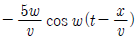
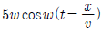
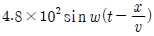
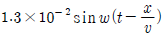
(정답률: 61%)
16. 비유전율이 10인 유전체를 5[V/m]인 전계내에 놓으면 유전체의 표면 전하밀도는 몇 [C/m2]인가? (단, 유전체의 표면과 전계는 직각이다.)
- 35ε0
- 45ε0
- 55ε0
- 65ε0
(정답률: 67%)
17. 내경의 반지름이 1mm, 외경의 반지름이 3mm인 동축 케이블의 단위 길이 당 인덕턴스는 약 몇 μH/m인가? (단, 이때 μr=1이며, 내부 인덕턴스는 무시한다.)
- 0.12
- 0.22
- 0.32
- 0.42
(정답률: 61%)
18. 평면 도체 표면에서 d[m] 의 거리에 점전하 Q[C]가 있을 때 이 전하를 무한원까지 운반하는데 필요한 일은 몇 J 인가?
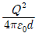
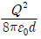
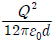
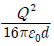
(정답률: 80%)
19. 반경 r1, r2인 동심구가 있다. 반경 r1, r2인 구 껍질에 각각 +Q1, +Q2의 전하가 분포되어 있는 경우 r1≤ r ≤ r2에서의 전위는
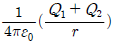
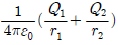
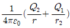
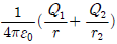
(정답률: 52%)
20. 다음 ( )안의 (ㄱ)과 (ㄴ)에 들어갈 알맞은 내용은?
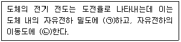
- (ㄱ) 비례 (ㄴ) 비례
- (ㄱ) 반비례 (ㄴ) 반비례
- (ㄱ) 비례 (ㄴ) 반비례
- (ㄱ) 반비례 (ㄴ) 비례
(정답률: 61%)
2과목: 전력공학
21. 경간 200m의 지지점이 수평인 가공 전선로가 있다. 전선 1m의 하중은 2kg/m, 풍압하중은 없는 것으로 하고 전선의 인장 하중은 4000kg, 안전율 2.2로 하면 이도는 몇 m인가?
- 4.7
- 5.0
- 5.5
- 6.2
(정답률: 69%)
22. 3상 송전선로의 전압이 66000V, 주파수가 60Hz, 길이가 10km, 1선당 정전용량이 0.3464μF/km인 무부하 충전전류는 약 몇 A인가?
- 40
- 45
- 50
- 55
(정답률: 70%)
23. 중거리 송전선로의 π형 회로에서 송전단 전류 Is는? (단, Z,Y는 선로의 직렬임피던스와 병렬 어드미턴스이고,Er, Ir은 수전단 전압과 전류이다.)
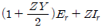
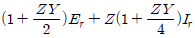
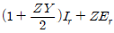
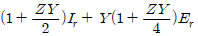
(정답률: 57%)
24. 선택지락 계전기의 용도를 옳게 설명한 것은?
- 단일 회선에서 지락 고장 회선의 선택 차단
- 단일 회선에서 지락 전류의 방향 선택 차단
- 병행 2회선에서 지락 고장 회선의 선택 차단
- 병행 2회선에서 지락 고장의 지속시간 선택 차단
(정답률: 77%)
25. 그림과 같은 선로의 등가선간 거리는 몇 m인가?
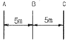
- 5
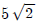
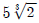
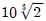
(정답률: 77%)
26. 송배전 계통에 발생하는 이상전압의 내부적 원인이 아닌 것은?
- 선로의 개폐
- 직격뢰
- 아크 접지
- 선로의 이상 상태
(정답률: 78%)
27. 수력 발전소를 건설할 때 낙차를 취하는 방법으로 적합하지 않은 것은?
- 수로식
- 댐식
- 유역 변경식
- 역조정지식
(정답률: 64%)
28. 초고압용 차단기에서 개폐 저항기를 사용하는 이유 중 가장 타당한 것은?
- 차단 전류의 역률 개선
- 차단전류 감소
- 차단속도 증진
- 개폐서지 이상전압 억제
(정답률: 79%)
29. 이상전압의 파고치를 저감시켜 기기를 보호하기 위하여 설치하는 것은?
- 리액터
- 피뢰기
- 아킹혼(arcing horn)
- 아마로드
(정답률: 72%)
30. 보일러 급수 중의 염류 등이 굳어서 내벽에 부착되어 보일러 열전도와 물의 순환을 방해하며 내면의 수관벽을 과열시켜 파열을 일으키게 하는 원인이 되는 것은?
- 스케일
- 부식
- 포밍
- 캐리오버
(정답률: 68%)
31. 송전선로에서 고조파 제거 방법이 아닌 것은?
- 변압기를 Δ결선한다.
- 유도전압 조정장치를 설치한다.
- 무효전력 보상장치를 설치한다.
- 능동형 필터를 설치한다.
(정답률: 58%)
32. 전기 공급 시 사람의 감전, 전기 기계류의 손상을 방지하기 위한 시설물이 아닌 것은?
- 보호용 개폐기
- 축전지
- 과전류 차단기
- 누전 차단기
(정답률: 80%)
33. 선로에 따라 균일하게 부하가 분포된 선로의 전력 손실은 이들 부하가 선로의 말단에 집중적으로 접속되어 있을 때 보다 어떻게 되는가?
- 2배로 된다.
- 3배로 된다.
- 1/2배로 된다.
- 1/3배로 된다.
(정답률: 68%)
34. 서지파가 파동임피던스 Z1의 선로 측에서 파동 임피던스 Z2의 선로 측으로 진행할 때 반사계수β는?
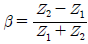
(정답률: 64%)
35. 일방적인 비접지 3상 송전선로의 1선 지락 고장 발생시 각 상의 전압은 어떻게 되는가?
- 고장 상의 전압은 떨어지고, 나머지 두 상의 전압은 변동되지 않는다.
- 고장 상의 전압은 떨어지고, 나머지 두 상의 전압은 상승한다.
- 고장 상의 전압은 떨어지고, 나머지 상의 전압도 떨어진다.
- 고장 상의 전압이 상승한다.
(정답률: 69%)
36. 전력용 콘덴서를 변전소에 설치할 때 직렬 리액터를 설치 하고자 한다. 직렬 리액터의 용량을 결정하는 식은? (단, f0는 전원의 기본 주파수, C는 역률 개선용 콘덴서 용량 L은 직렬 리액터의 용량이다.)
(정답률: 74%)
37. Y결선된 발전기에서 3상 단락사고가 발생한 경우 전류에 관한 식 중 옳은 것은? (단,Z0, Z1, Z2는 영상, 정상, 역상 임피던스 이다.)
(정답률: 47%)
38. 같은 선로와 같은 부하에서 교류 단상 3선식은 단상 2선식에 비하여 전압 강하와 배전 효율은 어떻게 되는가?
- 전압강하는 적고, 배전 효율은 높다.
- 전압강하는 크고, 배전 효율은 낮다.
- 전압강하는 적고, 배전 효율은 낮다.
- 전압강하는 크고, 배전 효율은 높다.
(정답률: 70%)
39. 발전 전력량 E[kWh], 연료 소비량 W[kg], 연료의 발열량 C[kcal/kg]인 화력 발전소의 열효율 n[%]는?
(정답률: 66%)
40. 고장 즉시 동작하는 특성을 갖는 계전기는?
- 순시 계전기
- 정한시 계전기
- 반한시 계전기
- 반한시성 정한시 계전기
(정답률: 80%)
3과목: 전기기기
41. 2대의 동기 발전기가 병렬 운전하고 있을 때, 동기화 전류가 흐르는 경우는?
- 기전력의 크기에 차가 있을 때
- 기전력의 위상에 차가 있을 때
- 기전력의 파형에 차가 있을 때
- 부하 분담에 차가 있을 때
(정답률: 68%)
42. 3대의 단상 변압기를 Δ-Y로 결선하고 1차 단자전압 V1, 1차 전류 I1이라 하면 2차 단자전압 V2와 2차전류 I2의 값은? (단, 권수비는 a이고, 저항, 리액턴스, 여자전류는 무시한다.)
(정답률: 58%)
43. 1000kW, 500V의 직류 발전기가 있다. 회전수 246rpm, 슬롯수 192, 각 슬롯내의 도체수 6, 극수는 12이다. 전부하에서의 자속수 [Wb]는? (단, 전기자 저항은 0.006Ω이고, 전기자 권선은 단중 중권이다.)
- 0.502
- 0.3⑤
- 0.2065
- 0.1084
(정답률: 53%)
44. 유도 전동기에서 크로우링(crawling) 현상으로 맞는 것은?
- 기동시 회전자의 슬롯수 및 권선법이 적당하지 않은 경우 정격 속도보다 낮은 속도에서 안정 운전이 되는 현상
- 기동시 회전자의 슬롯수 및 권선법이 적당하지 않은 경우 정격 속도보다 높은 속도에서 안정 운전이 되는 현상
- 회전자 3상 중 1상이 단선된 경우 정격속도의 50% 속도에서 안정 운전이 되는 현상
- 회전자 3상 중 1상이 단락된 경우 정격속도 보다 높은 속도에서 안정 운전이 되는 현상
(정답률: 59%)
45. 직류 전동기를 교류용으로 사용하기 위한 대책이 아닌 것은?
- 자계는 성층 철심, 원통형 고정자 적용
- 계자 권선수 감소, 전기자 권선수 증대
- 보상 권선 설치, 브러시 접촉 저항 증대
- 정류자편 감소, 전기자 크기 감소
(정답률: 47%)
46. 60kW, 4극, 전기자 도체의 수 300개, 중권으로 결선된 직류 발전기가 있다. 매극당 자속은 0.⑤Wb이고, 회전속도는 1200rpm이다. 이 직류 발전기가 전부하에 전력을 공급할 때 직렬로 연결된 전기자 도체에 흐르는 전류[A]는
- 32
- 42
- 50
- 57
(정답률: 50%)
47. 50Hz로 설계된 3상 유도전동기를 60Hz에 사용하는 경우 단자전압을 110%로 높일 때 일어나는 현상이 아닌 것은
- 철손 불변
- 여자전류 감소
- 출력이 일정하면 유효전류 감소
- 온도상승 증가
(정답률: 57%)
48. 직류 전동기의 역기전력이 220V, 분당 회전수가 1200rpm일 때, 토크가 15kgㆍm가 발생한다면 전기자 전류는 약 몇 A인가?
- 54
- 67
- 84
- 96
(정답률: 63%)
49. 5KVA 3300/210V, 단상 변압기의 단락시험에서 임피던스 전압 120V, 동손 150W라 하면 퍼센트 저항강하는 몇 %인가?
- 2
- 3
- 4
- 5
(정답률: 59%)
50. 주파수가 일정한 3상 유도전동기의 전원전압이 80%로 감소하였다면, 토크는? (단, 회전수는 일정하다고 가정한다.)
- 64%로 감소
- 80%로 감소
- 89%로 감소
- 변화 없음
(정답률: 70%)
51. 정류기 설계조건이 아닌 것은?
- 출력 전압 직류 평활성
- 출력 전압 최소 고조파 함유율
- 입력 역률 1 유지
- 전력계통 연계성
(정답률: 42%)
52. 2차로 환산한 임피던스가 각각 0.03+j0.02Ω, 0.02+0.03Ω인 단상 변압기 2대를 병렬로 운전시킬 때 분담 전류는?
- 크기는 같으나 위상이 다르다.
- 크기의 위상이 같다.
- 크기는 다르나 위상이 같다.
- 크기와 위상이 다르다.
(정답률: 70%)
53. 히스테리시스손과 관계가 없는 것은
- 최대 자속밀도
- 철심의 재료
- 회전수
- 철심용 규소강판의 두께
(정답률: 48%)
54. 동기 전동기에 관한 설명 중 틀린 것은
- 기동 토크가 작다.
- 유도 전동기에 비해 효율이 양호하다.
- 여자기가 필요하다.
- 역률을 조정할 수 없다.
(정답률: 71%)
55. 동기 발전기의 전기자 권선은 기전력의 파형을 개선하는 방법으로 분포권과 단절권을 쓴다. 분포권 계수를 나타내는 식은? (단, q는 매극 매상당의 슬롯수, m는 상수, α는 슬롯의 간격)
(정답률: 76%)
56. 유도 전동기로 동기 전동기를 기동하는 경우, 유도 전동기의 극수는 동기 전동기의 극수보다 2극 적은 것을 사용한다. 그 이유는? (단, s는 슬립, Ns는 동기속도이다.)
- 같은 극수일 경우 유도기는 동기속도보다 sNs만큼 늦으므로
- 같은 극수일 경우 유도기는 동기속도보다 (1-s)만큼 늦으므로
- 같은 극수일 경우 유도기는 동기속도보다 s만큼 빠르므로
- 같은 극수일 경우 유도기는 동기속도보다 (1-s)만큼 빠르므로
(정답률: 70%)
57. 특수전동기에 대한 설명 중 틀린 것은?
- 릴럭턴스 동기 전동기는 릴럭턴스 토크에 의해 동기 속도로 회전한다.
- 히스테리시스 전동기의 고정자는 유도 전동기 고정자와 동일하다.
- 스테퍼 전동기 또는 스텝모터는 피드백 없이 정밀 위치 제어가 가능하다.
- 선형 유도 전동기의 동기 속도는 극수에 비례한다.
(정답률: 48%)
58. 와류손이 200W인 3300/210V, 60Hz용 단상 변압기를 50Hz, 3000V의 전원에 사용하면 이 변압기의 와류손은 약 몇 W로 되는가?
- 85.4
- 124.2
- 165.3
- 248.5
(정답률: 54%)
59. 반도체 소자 중 3단자 사이리스터가 아닌 것은?
- SCS
- SCR
- GTO
- TRIAC
(정답률: 70%)
60. 전압이 일정한 모선에 접속되어 역률 100%로 운전하고 있는 동기 전동기의 여자전류를 증가시키면 역률과 전기자 전류는 어떻게 되는가?
- 뒤진 역률이 되고, 전기자 전류는 증가한다.
- 뒤진 역률이 되고, 전기자 전류는 감소한다.
- 앞선 역률이 되고, 전기자 전류는 증가한다.
- 앞선 역률이 되고, 전기자 전류는 감소한다.
(정답률: 55%)
4과목: 회로이론 및 제어공학
61. 다음의 연산증폭기 회로에서 출력전압 V0를 나타내는 식은? (단, Vi는 입력 신호이다.)
(정답률: 67%)
62. 특성 방정식 중 안정될 필요조건을 갖춘 것은
- s4+3s2+10s+10=0
- s3+s2-5s+10=0
- s3+2s2+4s-1=0
- s3+9s2+20s+12=0
(정답률: 70%)
63. 그림의 신호흐름 선도에서 C/R를 구하면
(정답률: 59%)
64. z변환법을 사용한 샘플치 제어계가 안정되려면 1+G(z)H(z)=0의 근의 위치는?
- z평면의 좌반면에 존재하여야 한다.
- z평면의 우반면에 존재하여야 한다.
- |z| = 1 인 단위원 안쪽에 존재하여야 한다.
- |z| = 1 인 단위원 바깥쪽에 존재하여야 한다.
(정답률: 71%)
65. f(t)=ke-at의 z 변환은?
(정답률: 65%)
66. 제어계의 입력이 단위계단 신호일 때 출력응답은?
- 임펄스 응답
- 인디셜 응답
- 노멀 응답
- 램프 응답
(정답률: 64%)
67. 자동 제어계의 과도 응답의 설명으로 틀린 것은?
- 지연시간은 최종값의 50%에 도달하는 시간이다.
- 정정시간은 응답의 최종값의 허용범위가 ±5%내에 안정되기 까지 요하는 시간이다.
- 백분율 오버슈트 = (최대오버슈트/최종목표값)×100
- 상승시간은 최종값의 10%에서 100%까지 도달하는데 요하는 시간이다.
(정답률: 71%)
68. 주파수 전달함수 G(s)=s인 미분요소가 있을 때 이 시스템의 벡터 궤적은?
(정답률: 58%)
69. 2차계의 감쇠비 δ가 δ > 1이면 어떤 경우인가?
- 비제동
- 과제동
- 부족 제동
- 발산
(정답률: 74%)
70. 특성 방정식 P(s)가 다음과 같이 주어지는 계가 있다. 이 계가 안정되기 위한 K와 T의 관계로 맞는 것은? (단, K와 T는 양의 실수이다.)
- K > T
- 15KT > 10K
- 3＋15KT > 10K
- 3-15KT > 10K
(정답률: 72%)
71. 반파 대칭의 왜형파에 포함되는 고조파는?
- 제 2고조파
- 제 4고조파
- 제 5고조파
- 제 6고조파
(정답률: 76%)
72. R[Ω]의 저항 3개를 Y로 접속한 것을 선간전압 200V의 3상 교류 전원에 연결할 때 선전류가 10A 흐른다면, 이 3개의 저항을 Δ로 접속하고 동일 전원에 연결하면 선전류는 몇 A인가?
- 30
- 25
- 20
- 20/√3
(정답률: 55%)
73. RL직렬 회로에서 시정수가 0.03 sec, 저항이 14.7Ω일때 코일의 인덕턴스[mH]는?
- 441
- 362
- 17.6
- 2.53
(정답률: 74%)
74. 전류 와 기전력 사이의 위상차는?
(정답률: 53%)
75. 그림과 같은 회로의 전달함수는?
(정답률: 51%)
76. 전원측 저항 1kΩ, 부하저항 10Ω 일 때, 이것에 변압비 n:1의 이상 변압기를 사용하여 정합을 취하려 한다. n의 값으로 옳은 것은?
- 1
- 10
- 100
- 1000
(정답률: 65%)
77. 다음 파형의 라플라스 변환은?
(정답률: 64%)
78. 정현파 교류 전압의 실효값에 어떠한 수를 곱하면 평균값을 얻을 수 있는가
(정답률: 64%)
79. 그림 (a)와 (b)의 회로가 등가 회로가 되기 위한 전류원 I[A]와 임피던스 Z[Ω]의 값은?(오류 신고가 접수된 문제입니다. 반드시 정답과 해설을 확인하시기 바랍니다.)
- 5A, 10Ω
- 2.5A, 10Ω
- 5A, 20Ω
- 2.5A, 20Ω
(정답률: 47%)
80. 일 때 f(t) 의 최종값은?
- 15
- 5
- 3
- 2
(정답률: 73%)
5과목: 전기설비기술기준 및 판단기준
81. 제 2종 접지공사의 접지저항값을 으로 정하고 있는데, 이때 I 에 해당되는 것은?(오류 신고가 접수된 문제입니다. 반드시 정답과 해설을 확인하시기 바랍니다.)
- 변압기의 고압측 또는 특고압측 전로의 1선 지락전류 암페어 수
- 변압기의 고압측 또는 특고압측 전로의 단락사고 시 고장 전류의 암페어 수
- 변압기의 1차측과 2차측의 혼촉에 의한 단락전류의 암페어 수
- 변압기의 1차와 2차에 해당하는 전류의 합
(정답률: 49%)
82. 옥내에 시설하는 관등회로의 사용전압이 1kV를 초과하는 방전등으로써 방전관에 네온 방전관을 사용한 관등회로의 배선은?
- MI 케이블 공사
- 금속관 공사
- 합성 수지관 공사
- 애자 사용 공사
(정답률: 36%)
83. 저압 가공전선과 고압 가공전선을 동일 지지물에 병가하는 경우, 고압 가공전선에 케이블을 사용하면 그 케이블과 저압 가공전선의 최소 이격거리는 몇 cm인가?
- 30
- 50
- 70
- 90
(정답률: 44%)
84. 케이블 트레이의 시설에 대한 설명으로 틀린 것은?(오류 신고가 접수된 문제입니다. 반드시 정답과 해설을 확인하시기 바랍니다.)
- 안전율은 1.5이상으로 하여야 한다.
- 비금속제 케이블 트레이는 난연성 재료의 것이어야 한다.
- 저압 옥내배선의 사용전압이 400V 미만인 경우에는 금속제 트레이에 제 3종 접지공사를 하여야 한다.
- 저압 옥내배선의 사용전압이 400V 이상인 경우에는 금속제 트레이에 제 1종 접지공사를 하여야 한다.
(정답률: 48%)
85. 22.9kV 3상 4선식 다중 접지방식의 지중 전선로의 절연 내력시험을 직류로 할 경우 시험전압은 몇 V인가?
- 16448
- 21068
- 32796
- 42136
(정답률: 49%)
86. 시가지에서 특고압 가공전선로의 지지물에 시설할 수 없는 통신선은?
- 지름 4mm의 절연전선
- 첨가 통신용 제 1종 케이블
- 광섬유 케이블
- CNCV 케이블
(정답률: 42%)
87. 특별 제 3종 접지공사를 시공한 저압 전로에 지기가 생겼을 때 0.5초 이내에 자동적으로 전로를 차단하는 장치가 설치 되었다면 접지 저항값은 몇 Ω 이하로 하여야 하는가? (단, 물기가 있는 장소로써 자동 차단기의 정격 감도전류는 300mA이다.)(관련 규정 개정전 문제로 여기서는 기존 정답인 2번을 누르면 정답 처리됩니다. 자세한 내용은 해설을 참고하세요.)
- 10
- 50
- 150
- 500
(정답률: 46%)
88. 사용전압이 400V 미만인 경우의 저압 보안 공사에 전선으로 경동선을 사용할 경우 지름은 몇 mm 이상인가?
- 2.6
- 6.5
- 4.0
- 5.0
(정답률: 39%)
89. 사람이 상시 통행하는 터널 안의 배선을 애자사용 공사에 의하여 시설하는 경우 설치 높이는 노면상 몇 m이상인가?
- 1.5
- 2
- 2.5
- 3
(정답률: 56%)
90. 발전소, 변전소, 개폐소 또는 이에 준하는 곳에 설치하는 배전반 시설에 법규상 확보할 사항이 아닌 것은?
- 방호 장치
- 통로를 시설
- 기기 조작에 필요한 공간
- 공기 여과 장치
(정답률: 63%)
91. 345kV 가공 전선로를 제1종 특고압 보안공사에 의하여 시설하는 경우에 사용하는 전선은 인장강도 77.47kN 이상의 연선 또는 단면적 몇 mm2이상의 경동연선 이어야 하는가?
- 100
- 125
- 150
- 200
(정답률: 45%)
92. 사용전압 22.9kV의 가공전선이 철도를 횡단하는 경우 전선의 레일면상 높이는 몇 m 이상인가?
- 5
- 5.5
- 6
- 6.5
(정답률: 66%)
93. 교류 전차선과 식물 사이의 이격거리는?(2021년 변경된 KEC 규정 적용됨)
- 1m 이상
- 3m 이상
- 5m 이상
- 7m 이상
(정답률: 58%)
94. 전체의 길이가 16m이고 설계하중이 6.8kN 초과 9.8kN 이하인 철근 콘크리트주를 논, 기타 지반이 연약한 곳 이외의 곳에 시설할 때, 묻히는 깊이를 2.5m보다 몇 cm 가산하여 시설하는 경우에는 기초의 안전율에 대한 고려없이 시설하여도 되는가?
- 10
- 20
- 30
- 40
(정답률: 60%)
95. KS C IEC 60364에서 전원의 한점을 직접 접지하고, 설비의 노출 도전성 부분을 전원 계통의 접지극과 별도로 전기적으로 독립하여 접지하는 방식은?
- TT 계통
- TN-C 계통
- TN-S 계통
- TN-CS 계통
(정답률: 54%)
96. 옥내의 저압전선으로 애자사용 공사에 의하여 전개된 곳에 나전선의 사용이 허용되지 않는 경우는?
- 전기로용 전선
- 취급자 이외의 자가 출입할 수 없도록 설비한 장소에 시설하는 전선
- 제분 공장의 전선
- 전선의 피복 절연물이 부식하는 장소에 시설하는 전선
(정답률: 64%)
97. 강관으로 구성된 철탑의 갑종풍압하중은 수직 투영면적 1m2에 대한 풍압을 기초로 하여 계산한 값이 몇 Pa 인가?
- 1255
- 1340
- 1560
- 2060
(정답률: 69%)
98. 사용전압이 25kV 이하의 특고압 가공 전선로에는 전화 선로의 길이 12km마다 유도전류가 몇 μA를 넘지 않아야 하는가?
- 1.5
- 2
- 2.5
- 3
(정답률: 71%)
99. “고압 또는 특별고압의 기계기구, 모선 등을 옥외에 시설하는 발전소, 변전소, 개폐소 또는 이에 준하는 곳에 시설하는 울타리, 담 등의 높이는 ((ㄱ))m 이상으로 하고, 지표면과 울타리, 담 등의 하단사이의 간격은 ((ㄴ))cm 이하로 하여야 한다.” 에서 (ㄱ), (ㄴ)에 알맞은 것은?
- (ㄱ) 3, (ㄴ) 15
- (ㄱ) 2, (ㄴ) 15
- (ㄱ) 3, (ㄴ) 25
- (ㄱ) 2, (ㄴ) 25
(정답률: 56%)
100. 발, 변전소의 주요 변압기에 시설하지 않아도 되는 계측장치는?
- 역률계
- 전압계
- 전력계
- 전류계
(정답률: 71%)